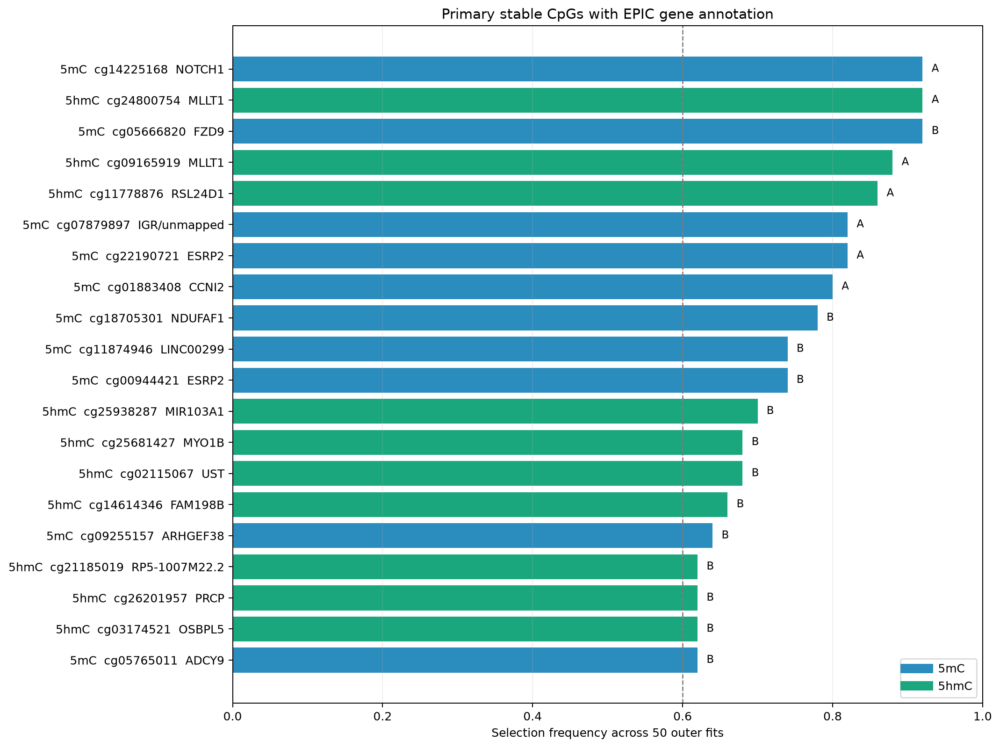
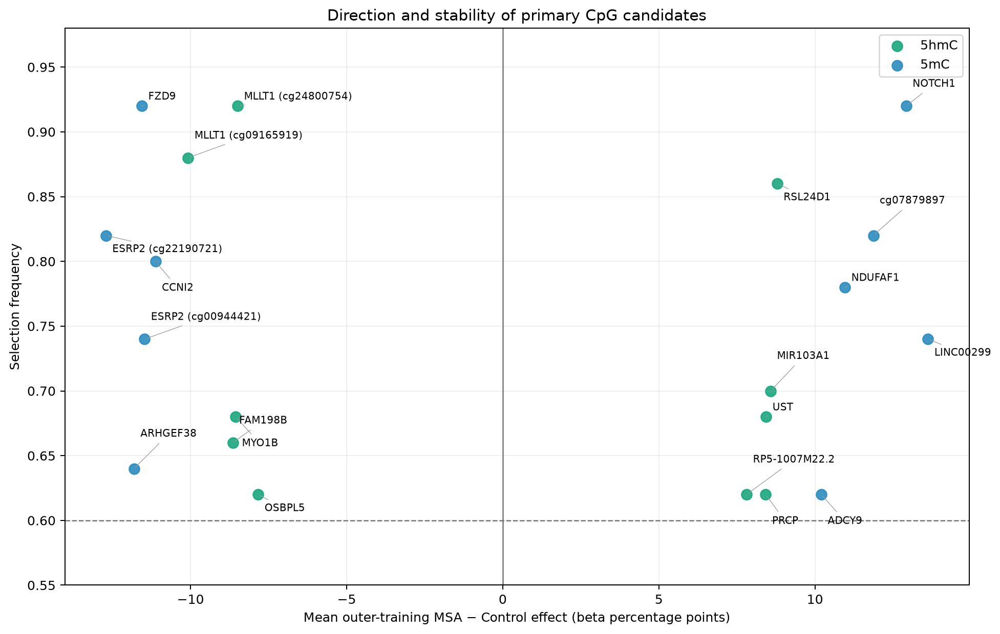
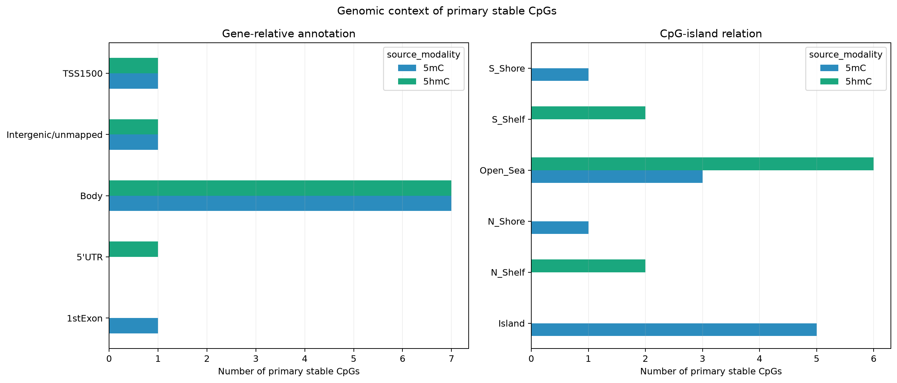
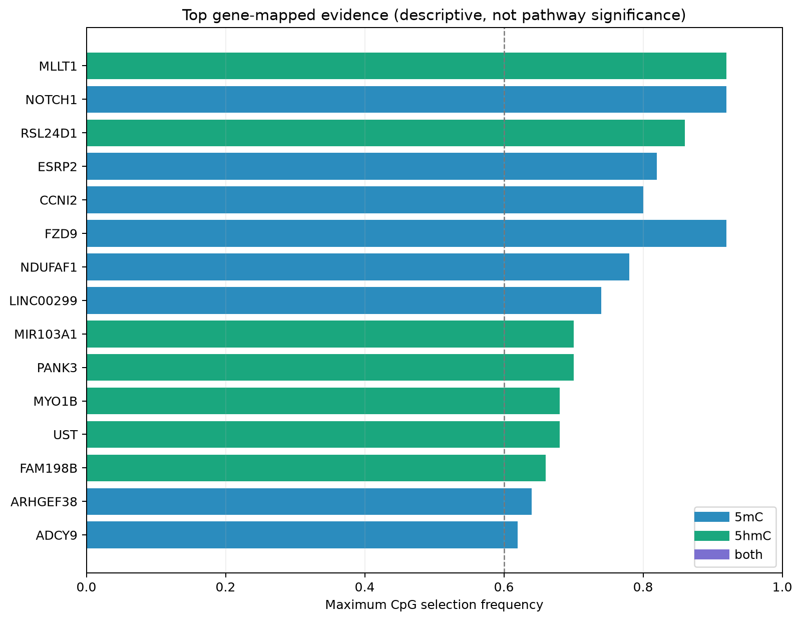

Tier A requires selection in at least 80% of outer fits and at least 90% coefficient-direction consistency. Tier B requires at least 60% selection and 80% direction consistency. These are descriptive reproducibility rules, not hypothesis-test p-values.
| source_modality | cpg_id | gene_symbols | stability_tier | selection_frequency | coefficient_direction_consistency | effect_direction | mean_effect_msa_minus_control | ucsc_refgene_group | relation_to_cpg_island | manifest_qc_status |
|---|---|---|---|---|---|---|---|---|---|---|
| 5mC | cg14225168 | NOTCH1 | A_high_stability | 0.920 | 1.000 | MSA_higher | 0.129 | Body | N_Shore | pass_manifest_audit |
| 5hmC | cg24800754 | MLLT1 | A_high_stability | 0.920 | 0.978 | MSA_lower | -0.085 | Body | S_Shelf | pass_manifest_audit |
| 5mC | cg05666820 | FZD9 | B_moderate_stability | 0.920 | 0.870 | MSA_lower | -0.116 | 1stExon | Island | pass_manifest_audit |
| 5hmC | cg09165919 | MLLT1 | A_high_stability | 0.880 | 1.000 | MSA_lower | -0.101 | Body | S_Shelf | pass_manifest_audit |
| 5hmC | cg11778876 | RSL24D1 | A_high_stability | 0.860 | 1.000 | MSA_higher | 0.088 | Body | N_Shelf | pass_manifest_audit |
| 5mC | cg07879897 | A_high_stability | 0.820 | 1.000 | MSA_higher | 0.119 | Island | review_common_manifest_snp | ||
| 5mC | cg22190721 | ESRP2 | A_high_stability | 0.820 | 0.976 | MSA_lower | -0.127 | Body | Island | pass_manifest_audit |
| 5mC | cg01883408 | CCNI2 | A_high_stability | 0.800 | 0.925 | MSA_lower | -0.111 | Body;Body;Body | Island | review_common_manifest_snp |
| 5mC | cg18705301 | NDUFAF1 | B_moderate_stability | 0.780 | 1.000 | MSA_higher | 0.110 | TSS1500;TSS1500 | S_Shore | review_common_manifest_snp |
| 5mC | cg11874946 | LINC00299 | B_moderate_stability | 0.740 | 1.000 | MSA_higher | 0.136 | Body | pass_manifest_audit | |
| 5mC | cg00944421 | ESRP2 | B_moderate_stability | 0.740 | 0.865 | MSA_lower | -0.115 | Body | Island | pass_manifest_audit |
| 5hmC | cg25938287 | MIR103A1;PANK3 | B_moderate_stability | 0.700 | 1.000 | MSA_higher | 0.086 | TSS1500;Body | pass_manifest_audit | |
| 5hmC | cg25681427 | MYO1B | B_moderate_stability | 0.680 | 1.000 | MSA_lower | -0.086 | Body;Body;Body | pass_manifest_audit | |
| 5hmC | cg02115067 | UST | B_moderate_stability | 0.680 | 0.971 | MSA_higher | 0.084 | Body | pass_manifest_audit | |
| 5hmC | cg14614346 | FAM198B | B_moderate_stability | 0.660 | 0.879 | MSA_lower | -0.086 | Body;Body;Body | review_common_manifest_snp | |
| 5mC | cg09255157 | ARHGEF38 | B_moderate_stability | 0.640 | 1.000 | MSA_lower | -0.118 | Body | pass_manifest_audit | |
| 5hmC | cg21185019 | RP5-1007M22.2 | B_moderate_stability | 0.620 | 1.000 | MSA_higher | 0.078 | review_common_manifest_snp | ||
| 5hmC | cg26201957 | PRCP | B_moderate_stability | 0.620 | 1.000 | MSA_higher | 0.084 | Body;Body | pass_manifest_audit | |
| 5hmC | cg03174521 | OSBPL5 | B_moderate_stability | 0.620 | 0.935 | MSA_lower | -0.078 | 5URT;5URT;5URT | N_Shelf | review_common_manifest_snp |
| 5mC | cg05765011 | ADCY9 | B_moderate_stability | 0.620 | 0.871 | MSA_higher | 0.102 | Body | pass_manifest_audit |



| rank | gene_symbol | stable_cpg_count | cpg_ids | modalities | best_stability_tier | max_selection_frequency | effect_directions | all_manifest_qc_pass |
|---|---|---|---|---|---|---|---|---|
| 1 | MLLT1 | 2 | cg09165919;cg24800754 | 5hmC | A_high_stability | 0.920 | MSA_lower | True |
| 2 | NOTCH1 | 1 | cg14225168 | 5mC | A_high_stability | 0.920 | MSA_higher | True |
| 3 | RSL24D1 | 1 | cg11778876 | 5hmC | A_high_stability | 0.860 | MSA_higher | True |
| 4 | ESRP2 | 2 | cg00944421;cg22190721 | 5mC | A_high_stability | 0.820 | MSA_lower | True |
| 5 | CCNI2 | 1 | cg01883408 | 5mC | A_high_stability | 0.800 | MSA_lower | False |
| 6 | FZD9 | 1 | cg05666820 | 5mC | B_moderate_stability | 0.920 | MSA_lower | True |
| 7 | NDUFAF1 | 1 | cg18705301 | 5mC | B_moderate_stability | 0.780 | MSA_higher | False |
| 8 | LINC00299 | 1 | cg11874946 | 5mC | B_moderate_stability | 0.740 | MSA_higher | True |
| 9 | MIR103A1 | 1 | cg25938287 | 5hmC | B_moderate_stability | 0.700 | MSA_higher | True |
| 10 | PANK3 | 1 | cg25938287 | 5hmC | B_moderate_stability | 0.700 | MSA_higher | True |
| 11 | MYO1B | 1 | cg25681427 | 5hmC | B_moderate_stability | 0.680 | MSA_lower | True |
| 12 | UST | 1 | cg02115067 | 5hmC | B_moderate_stability | 0.680 | MSA_higher | True |
| 13 | FAM198B | 1 | cg14614346 | 5hmC | B_moderate_stability | 0.660 | MSA_lower | False |
| 14 | ARHGEF38 | 1 | cg09255157 | 5mC | B_moderate_stability | 0.640 | MSA_lower | True |
| 15 | ADCY9 | 1 | cg05765011 | 5mC | B_moderate_stability | 0.620 | MSA_higher | True |
| 16 | OSBPL5 | 1 | cg03174521 | 5hmC | B_moderate_stability | 0.620 | MSA_lower | False |
| 17 | PRCP | 1 | cg26201957 | 5hmC | B_moderate_stability | 0.620 | MSA_higher | True |
| 18 | RP5-1007M22.2 | 1 | cg21185019 | 5hmC | B_moderate_stability | 0.620 | MSA_higher | False |

The original report identified five genome-wide significant 5mC probes and highlighted a 5mC-to-5hmC shift at AREL1/cg08753407. This table checks exact CpG-and-modality overlap without treating absence as a contradiction, because the published EWAS and the present predictive stability analysis answer different questions.
| modality | cpg_id | gene | publication_status | primary_stable_exact_overlap | maximum_selection_frequency_any_model |
|---|---|---|---|---|---|
| 5mC | cg08753407 | AREL1 | genome_wide_FDR_below_0.05 | False | 0.000 |
| 5mC | cg03452759 | IGR | genome_wide_FDR_below_0.05 | False | 0.000 |
| 5mC | cg24646067 | IGR | genome_wide_FDR_below_0.05 | False | 0.000 |
| 5mC | cg27312312 | KTN1 | genome_wide_FDR_below_0.05 | False | 0.000 |
| 5mC | cg16096172 | IGR | genome_wide_FDR_below_0.05 | False | 0.000 |
| 5hmC | cg08753407 | AREL1 | reported_top_5hmC_not_FDR_below_0.05 | False | 0.000 |
No naive gene-level enrichment was run. Methylation arrays have probe-number and multi-gene annotation bias. Files named gometh_selected_*.txt.gz and gometh_background_*.txt.gz were prepared for a separate bias-aware missMethyl/GOmeth analysis. Any future enrichment must be labelled exploratory because the input CpGs are ML-stable features rather than EWAS-significant probes.